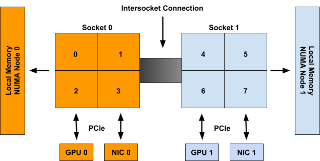
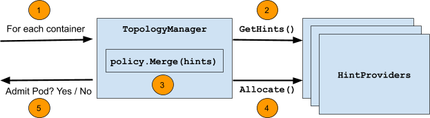
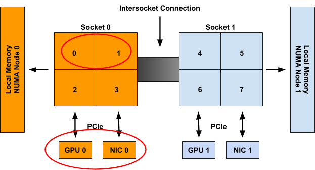

Kubenetes NUMA拓扑感知功能介绍
由来
最近的工作内容中涉及到了 NUMA 感知相关的功能，之前没有特意去看过 kubelet 相关部分的实现，也是趁此机会把落下的补补。在看代码的过程中，NUMA 感知部分的逻辑尤其涉及到一些位操作的部分，看的让人头疼，于是从网上搜了搜有关原理的介绍，恰好在官网找到一篇 blog，看完之后再去看代码就会豁然开朗。此篇是对原文的翻译，想阅读原文的可以直接到这里。
TopologyManager
TopologyManager 在1.18版本中处于 beta 状态，该功能支持 CPU 和外围设备（例如 SR-IOV VF 和 GPU）的 NUMA 对齐，使工作负载能够在针对低延迟优化的环境中运行。
在引入 TopologyManager 之前，CPU 和设备管理器会做出相互独立的资源分配决策。这可能会导致 Multi-Socket 系统上出现不希望的分配，降低延迟敏感应用的性能。随着 TopologyManager 的引入，我们现在有办法避免这种情况。这篇blog包括如下内容：
NUMA及其重要性简介- 用户可使用的用于保证 CPU 和外围设备 NUMA 对齐的策略
TopologyManager内部工作原理TopologyManager当前限制TopologyManager未来发展规划
什么是NUMA & 为什么需要关心？
NUMA 是 Non-Uniform Memory Access 的简称。它是一种在多 CPU 系统上可用的技术，允许不同的 CPU 以不同的速度访问内存的不同部分。 任何直接连接到 CPU 的内存都被认为是该 CPU 的本地内存，并且可以非常快速地访问。 任何未直接连接到 CPU 的内存都被认为是非本地的。在现代系统上，本地与非本地内存的概念也可以扩展到外围设备，例如 NIC 或 GPU。 为了获得高性能，应该分配 CPU 和设备，以便它们可以访问相同的本地内存。
NUMA 系统上的所有内存都分为一组NUMA 节点，每个节点代表一组 CPU 或设备的本地内存。 如果单个 CPU 的本地内存与该 NUMA 节点相关联，则我们将其称为 NUMA 节点的一部分。
基于访问外围设备时所必须通过的最短互连数量，我们将外围设备视为 NUMA 节点的一部分。
例如，在图 1 中，CPU 0-3 被称为 NUMA node 0 的一部分，而 CPU 4-7 是 NUMA node 1 的一部分。同样，GPU 0 和 NIC 0 被称为 NUMA node 0 的一部分，因为它们 连接到 Socket 0，其 CPU 都是 NUMA node 0 的一部分。 NUMA node 1 上的 GPU 1 和 NIC 1 也是如此。

尽管上面的示例显示了 NUMA 节点到 Socket 的 1-1 映射，但在一般情况下不一定如此。 单个 NUMA 节点上可能有多个 Socket，或者单个 Socket 的单个 CPU 可能连接到不同的 NUMA 节点。 此外，Sub-NUMA Clustering（在最近的英特尔 CPU 上可用）等新兴技术允许单个 CPU 与多个 NUMA 节点相关联，只要它们对两个节点的内存访问时间相同（或差异可以忽略不计）。
NUMA 对齐
TopologyManager 提供了如下几种对齐策略：
- none：此政策不会尝试进行任何资源调整。 它的行为就像 TopologyManager 根本不存在一样。 这是默认策略。
- best-effort：使用此策略，TopologyManager 将尝试尽可能地对齐 NUMA 节点上的分配，但即使某些分配的资源未在同一 NUMA 节点上对齐，也会始终允许 pod 启动。
- restricted：此策略与尽力而为策略相同，但如果分配的资源无法正确对齐，它将导致 pod 准入失败。 与
single-numa-node策略不同，如果不可能在单个 NUMA 节点上满足分配请求，则某些分配可能来自多个 NUMA 节点。 - single-numa-node：这个策略是最严格的，只有当所有请求的 CPU 和设备都可以从一个 NUMA 节点分配时，pod 准入才会通过。
需要注意的是，所选策略单独应用于 pod 规范中的每个容器，而不是将所有容器中的资源对齐在一起。
此外，单个策略通过全局 kubelet 标志应用于节点上的所有 pod，而不是允许用户逐个 pod（或逐个容器）选择不同的策略。 我们希望在未来放宽这一限制。
kubelet可供设置的策略如下：
|
|
通过feature gate来控制功能的开启，于1.16引入，自1.18开始默认开启，形式如下：
|
|
为了根据所选策略触发对齐，用户必须根据特定要求在其 pod.spec 中设置 CPU 和 device 的request值。
对于外围设备，这意味着从设备插件（例如 intel.com/sriov、nvidia.com/gpu 等）提供的可用资源中请求设备。 这仅在设备插件与 TopologyManager 正确集成时才有效。 目前，已知具有此扩展的唯一插件是 Nvidia GPU 设备插件和英特尔 SRIOV 网络设备插件。 可以在此处找到有关如何扩展设备插件以与 TopologyManager 集成的详细信息。
对于 CPU，这要求 CPUManager 已配置为启用了其 –static 策略，并且 pod 在保证 QoS 类中运行（即所有 CPU 和内存限制都等于它们各自的 CPU 和内存请求）。 还必须以整数值（例如 1、2、1000m 等）请求 CPU。 可以在此处找到有关如何设置 CPUManager 策略的详细信息。
例如，假设 CPUManager 在其 –static 策略启用的情况下运行，并且 gpu-vendor.com 和 nic-vendor.com 的设备插件已扩展为与 TopologyManager 正确集成，则下面的 pod 规范足以触发 TopologyManager 运行其选定的策略：
|
|
遵循上一节中的图 1，这将导致以下对齐分配之一：
|
|
只需遵循此模式，即可让 TopologyManager 确保请求拓扑感知设备和独占 CPU 的容器之间的 NUMA 对齐。
注意： 如果 Pod 被 TopologyManager 策略之一拒绝，它将被置于 Terminated 状态，并出现 Pod 准入错误和 TopologyAffinityError 的原因。 一旦 pod 处于此状态，Kubernetes 调度程序将不会尝试重新调度它。 因此，建议使用带 replicas 的 deployment 来应对在遇到此类故障时触发 pod 的重新部署。 还可以实施外部控制循环来触发具有 TopologyAffinityError 的 pod 的重新部署。
实现机制
TopologyManager 执行的主要逻辑的伪代码如下所示：
|
|
下图总结了此循环期间采取的步骤：

步骤说明如下：
- 循环遍历 pod 中的所有容器。
- 对于每个容器，从容器请求的每种拓扑感知资源类型（例如
gpu-vendor.com/gpu、nic-vendor.com/nic、cpu等）的一组HintProviders中收集TopologyHints。 - 使用选定的策略，合并收集到的
TopologyHints以找到在所有资源类型之间对齐资源分配的最佳提示。 - 再次遍历
HintProviders，利用上一步中返回的最佳提示为容器分配资源。 - 此循环在 pod 准入时间运行，如果这些步骤中的任何一个失败或根据所选策略无法满足对齐，则Pod注入失败。 相应地清除之前分配的任何资源。
以下部分更详细地介绍了 TopologyHints 和 HintProviders 的确切结构，以及每个策略使用的合并策略的一些细节。
TopologyHints
TopologyHint 对一组约束进行编码，从中可以满足给定的资源请求。 目前，我们考虑的唯一约束是 NUMA 对齐。 它的定义如下：
|
|
NUMANodeAffinity 字段包含可以满足资源请求的 NUMA 节点的位掩码。 例如，具有 2 个 NUMA 节点的系统上可能的掩码包括：
|
|
Preferred 字段包含一个布尔值，用于指示指定的提示是否优先选择。 使用 best-effort 策略，在生成最佳提示时，Preferred 提示将优先于非 Preferred 提示。 使用 restricted 和单 numa-node 策略，非 Preferred 的提示将被拒绝。
通常，HintProviders 通过查看可以满足资源请求的当前可用资源集来生成 TopologyHints。 更具体地说，它们为可以满足资源请求的 NUMA 节点的每个可能掩码生成一个 TopologyHint。 如果掩码不能满足请求，则将其省略。 例如，当被要求分配 2 个资源时，HintProvider 可能会在具有 2 个 NUMA 节点的系统上提供以下提示。 这些提示显示两种资源可以来自单个 NUMA 节点（0 或 1），也可以分别来自不同的 NUMA 节点（但我们更希望它们仅来自一个）。
|
|
目前，当且仅当 NUMANodeAffinity 编码可以满足资源请求的最小 NUMA 节点集时，所有 HintProvider 才将 Preferred 字段设置为 True 。 通常，这仅对于在其位掩码中设置了单个 NUMA 节点的 TopologyHint 为 True。 但是，如果满足资源请求的唯一方法是跨越多个 NUMA 节点（例如，请求 2 个设备并且系统上仅有的 2 个设备位于不同的 NUMA 节点上），则它也可能为 True：
|
|
注意：以这种方式设置 Preferred 字段不是基于当前可用资源的集合。 它基于在一些最小的 NUMA 节点集上物理分配请求资源数量的能力。
通过这种方式，如果在其他容器释放其资源之前无法满足实际的首选分配，则 HintProvider 可以返回所有 Preferred 字段设置为 False 的提示列表。 例如，请考虑图 1 中系统的以下场景：
- 目前除分配给容器的CPU之外只剩2 CPU空闲
- 剩余的 2 CPU 位于不同的 NUMA 节点上
- 一个新的容器出现，要求 2 CPU
在这种情况下，唯一生成的提示将是 {11: False} 而不是 {11: True}。 发生这种情况是因为可以从该系统上的同一个 NUMA 节点分配 2 个 CPU（鉴于当前的分配状态，现在不是这样）。 这个想法是，当可以满足最小对齐时，最好让 pod 准入失败并重试部署，而不是允许以次优对齐来调度 pod。
HintProviders
HintProvider 是 kubelet 内部的一个组件，用于协调与 TopologyManager 对齐的资源分配。 目前 Kubernetes 中唯一的 HintProvider 是 CPUManager 和 DeviceManager。 我们计划很快添加对 HugePages 的支持。
如前所述，TopologyManager 从 HintProviders 收集 TopologyHints，使用合并后的最佳提示触发对齐的资源分配。 因此，HintProviders 实现了以下接口：
|
|
请注意，对 GetTopologyHints() 的调用返回一个 map\[string][]TopologyHint。 这允许单个 HintProvider 为多种资源类型提供提示，而不仅仅是一种。 例如，DeviceManager 需要这样做，以便为其插件注册的每个资源类型传回提示。
当 HintProviders 生成他们的提示时，他们只考虑如何满足系统上当前可用资源的对齐，不考虑已分配给其他容器的任何资源。
例如，考虑图 1 中的系统，其中有以下两个容器从中请求资源：

如果 Container0 是在系统上分配的第一个容器，则将为规范中的三种拓扑感知资源类型生成以下提示集：
|
|
对应的对齐结果：
|
|

当考虑 Container1 时，这些资源被假定为不可用，因此只会生成以下提示集：
|
|
对其结果如下：
|
|
注意：与本节开头提供的伪代码不同，对 Allocate() 的调用实际上并没有直接采用一个合并后的最佳提示的参数。 相反，TopologyManager 实现了以下 Store 接口，HintProviders 可以查询该接口以检索为特定容器生成的提示：
|
|
将其分离到其自己的 API 调用中，允许人们在 pod 准入循环之外访问此提示。 这对于调试以及通过 kubectl 等工具获取生成的提示很有用。
Policy.Merge
由给定策略定义的合并策略决定了它如何将所有 HintProvider 生成的一组 TopologyHint 组合成单个 TopologyHint。
所有受支持策略的合并策略都以相同的方式开始：
- 取为每种资源类型生成的
TopologyHints的叉积 - 对于叉积中的每个条目，将每个
TopologyHint的 NUMA Affinity进行按位与计算，并将结果设置为到合并提示的 NUMA Affinity。 - 如果条目中的所有提示都将
Preferred设置为 True ，则在生成的合并提示中将Preferred设置为 True。 - 如果即使条目中的一个提示已将
Preferred设置为 False ，生成的合并提示中Preferred为 False 。 如果其 NUMA Affinity 包含全 0，则合并提示中 Preferred 也为 False。
按照上一节的示例，Container0 生成的提示为：
|
|
上述算法产生以下叉积和合并后的提示：
{cpu, gpu-vendor.com/gpu, nic-vendor.com/nic} |
“merged” hint |
|---|---|
[{01: True}, {01: True}, {01: True}] |
{01: True} |
[{01: True}, {01: True}, {10: True}] |
{00: False} |
[{01: True}, {10: True}, {01: True}] |
{00: False} |
[{01: True}, {10: True}, {10: True}] |
{00: False} |
[{10: True}, {01: True}, {01: True}] |
{00: False} |
[{10: True}, {01: True}, {10: True}] |
{00: False} |
[{10: True}, {10: True}, {01: True}] |
{00: False} |
[{10: True}, {10: True}, {10: True}] |
{01: True} |
[{11: False}, {01: True}, {01: True}] |
{01: False} |
[{11: False}, {01: True}, {10: True}] |
{00: False} |
[{11: False}, {10: True}, {01: True}] |
{00: False} |
[{11: False}, {10: True}, {10: True}] |
{10: False} |
一旦合并提示列表生成，剩下的工作就由特定的 TopologyManager 策略来决定将哪个提示视为最佳提示。
一般来说，这包括：
- 按“狭窄程度”对合并的提示进行排序。 窄度定义为在提示的 NUMA Affinity 掩码中设置的位数。 设置的位越少，提示越窄。 对于在其 NUMA Affinity 掩码中设置相同位数的提示，具有最低位设置的提示被认为更窄。
- 按
Preferred字段对合并的提示进行排序。 与将 Preferred 设置为 False 的提示相比，将 Preferred 设置为 True 的提示更可能被视为候选对象。 - 选择具有最佳设置的最窄提示。
在 best-effort 策略的情况下，此算法将始终导致某些提示被选为最佳提示，最终Pod准入通过。 HintProviders 根据这个最佳提示进行资源分配。
但是，在 restricted 和 single-numa-node 策略的情况下，任何选择的 Preferred 设置为False 的提示将被立即拒绝，导致pod 准入失败并且无法资源分配。 此外 single-numa-node 还将拒绝在其 Affinity 掩码中设置了多个 NUMA 节点的提示。
在上面的示例中，所有策略都会使用 {01: True} 提示，Pod准入成功。
Upcoming enhancements
虽然 1.18 版本和 Beta 版升级带来了一些重要的增强和修复，但仍然存在许多限制，如下所述。 我们已经在努力解决这些限制以及更多问题。
本节将介绍我们计划在不久的将来为 TopologyManager 实施的一组增强功能。 这个列表并不详尽，但它很好地说明了我们前进的方向。它按照我们期望看到每个增强完成的时间范围进行排序。
如果您想参与其中的任何增强功能，请参加每周一次的 Kubernetes SIG-node 会议以了解更多信息并成为社区工作的一部分！
Supporting device-specific constraints
目前，NUMA 亲和性是 TopologyManager 为资源对齐考虑的唯一约束。 此外，可以对 TopologyHint 进行的唯一扩展涉及 node-level 约束，例如跨设备类型的 PCIe 总线对齐。 尝试向该结构添加任何特定于设备的约束（例如，一组 GPU 设备之间的内部 NVLINK 拓扑）将是棘手的。
因此，我们建议对设备插件接口进行扩展，允许插件声明其拓扑感知分配首选项，而无需向 kubelet 公开任何特定于设备的拓扑信息。 通过这种方式，TopologyManager 可以被限制为仅处理常见的节点级拓扑约束，同时仍然可以将特定于设备的拓扑约束合并到其分配决策中。
可以在此处找到此提案的详细信息，并且将很快在 Kubernetes 1.19 中提供。
NUMA alignment for hugepages
如前所述，TopologyManager 当前仅有的两个 HintProvider : CPUManager 和 DeviceManager。 但是，目前正在增加巨页的支持。 随着这项工作的完成，TopologyManager 最终将能够在同一个 NUMA 节点上分配内存、hugepages、CPU 和 PCI 设备。
这项工作的 KEP 目前正在审查中，并且正在制作原型以尽快实现此功能。
Scheduler awareness
目前，TopologyManager 充当 Pod 准入控制器，它不直接参与 pod 的调度决策。相反，当 kubernetes 调度程序（或在部署中运行的任何调度程序）将 pod 放置在节点上运行时，TopologyManager 将决定是“接纳”还是“拒绝”该 pod。如果 Pod 由于缺乏可用的 NUMA 对齐资源而被拒绝，事情会变得有点有趣。这个 kubernetes issue 很好地突出并讨论了这种情况。
那么我们如何着手解决这个限制呢？我们可以利用 Kubernetes 调度框架来实现！该框架提供了一组新的插件 API，这些 API 与现有的 Kubernetes 调度程序集成，并允许实现调度功能，例如 NUMA 对齐。
如何实现这些扩展与 TopologyManager 集成的细节尚未制定。我们仍然需要回答以下问题：
- 我们是否需要重复的逻辑在
TopologyManager和调度程序中决定设备的亲和性？ - 我们是否需要一个新的 API 来从
TopologyManager获取TopologyHints到调度程序插件？
此功能的工作应在接下来的几个月内开始，敬请期待！
Per-pod alignment policy
如前所述，单个策略通过全局 kubelet 标志应用于节点上的所有 pod，而不是允许用户逐个 pod（或逐个容器）选择不同的策略。
虽然我们同意这将是一个很棒的功能，但在实现之前还有很多障碍需要克服。 最大的障碍是此增强功能需要更改 API 才能在 Pod spce 或其关联的 RuntimeClass 中表达所需的对齐策略。
我们现在才开始认真讨论这个功能，它离可用还有几个版本。
Conclusion
随着 TopologyManager 在 1.18 中升级为 Beta，我们鼓励大家尝试并期待您的任何反馈。 在过去的几个版本中进行了许多修复和增强，大大提高了 TopologyManager 及其 HintProviders 的功能和可靠性。 虽然仍然存在许多限制，但我们计划进行一系列增强来解决这些问题，并期待在即将发布的版本中为您提供许多新功能。
如果您有其他增强功能的想法或对某些功能的渴望，请随时告诉我们。 团队始终对增强和改进 TopologyManager 的建议持开放态度。